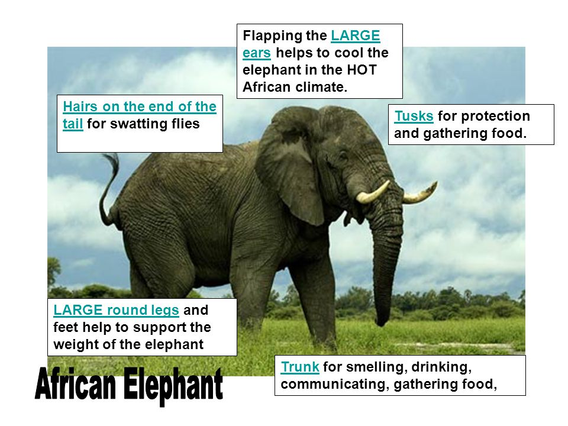

The adaptations elephants have gone through are: Their large body stores fat and water, and huge gut can digest food efficiently.They have no sweat glands. Flapping their ears create cooling in the heat which was change that happened over time. This makes them suited for the environment they are from as: They are the largest animals on earth. They play a vital role when balancing natural ecosystems. Such as trample forests and dense grasslands, which makes room for smaller species. They also create water holes which are used by other species when rainfall is low. In fact, African Elephants are highly intelligent, with emotions, feelings, compassion and self-awareness. When they eat, they create gaps in the vegetation. These allow new plants to grow and be useful for other animals. They are also the few major ways which help trees disperse their seeds. In fact, some species rely entirely upon elephants for seed dispersal. The predicted forecast change in the climate is global warming, which is more heat than usual. This leads them to sensitivity to high temperatures and susceptibility to a variety of diseases. In fact, as stated by WorldWildLife, “An increasingly limited dispersal ability due to habitat fragmentation, coupled with a long generation time and moderate amounts of genetic variation, may limit the ability of the species to adapt to a changing climate”. The major concern is their need for large amounts of fresh water, which has a influence this has on their activities, reproduction and migration. A major characteristic that will continue to evolve is developing without their tusks that are essential in helping them dig, lift trees, and protect themselves during an attack. The fault is poachers who had removed and illegally sold the tusks on the black market for many years. The evolution happened relatively quickly, which caused many of African elephants being now tuskless. It is found that climate change is drying up rivers which led to other species migrating to new environments, causing dramatic shifts in ecosystems. This has resulted to lions, killing animals such as sheep and goats in villages near the area. It has also been said that ice ages happen every 100,000 years. If this were to happen then we would have a situation like the woolly mammoth. More hair might start to appear if this were to happen. Animals such as emperor penguins, Antarctic krills, and even humans have adapted to the cold environment by feeling the cold in your arms, and feet instead of your center body. Changes like this prove who survives and who does not. Emperor penguins have a nasal which allows them to regain the heat lost through breathing, while krills downsize their size due to the scarce food since the Arctic doesn't get a lot of sunlight
